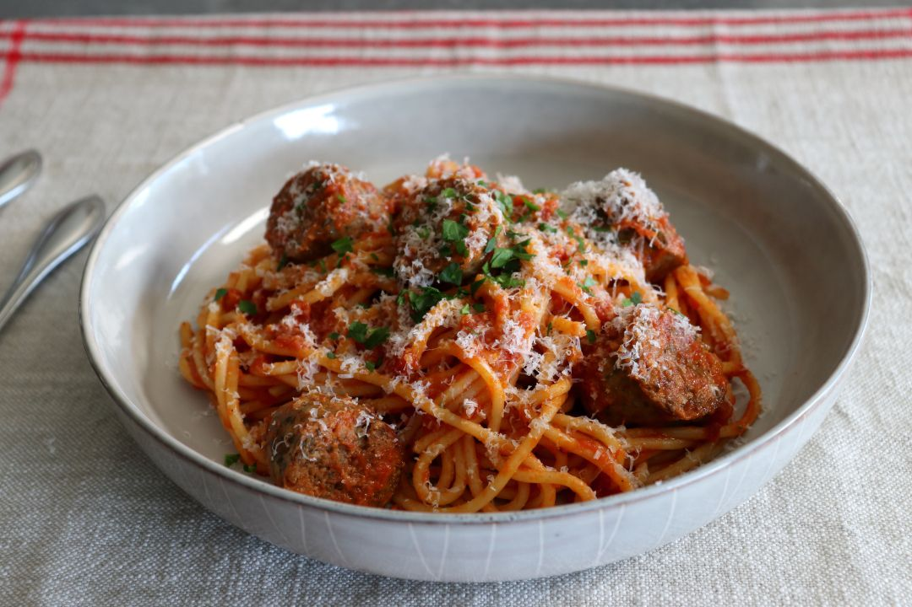

Italian Sausage Spaghetti
Description
Seasoned Italian sausage provides a zesty flavor to this quick and tasty dish.
Ingredients
- Small onion chopped
- Small green pepper, chopped
- 2 teaspoons olive oil
- 3 garlic cloves, minced
- 5 cooked Italian sausage links, cut into 1/4 inch slices
- 1 can (28 ounces) diced tomatoes, undrained
- 1 can (6 ounces) tomato paste
- 1/4 cup of water
- 1 teaspoon sugar
- 1 tablespoon Italian seasoning
- 1/2 teaspoon salt
- 1/2 teaspoon pepper
- Hot cooked spaghetti
Steps
- In a large saucepan, saute onion and green pepper in oil until tender.
- Add garlic; cook 1 minute longer. Stir in the sausage, tomatoes, tomato paste, water, sugar and seasonings.
- Bring to a boil.
- Reduce heat; cover and simmer for 15 minutes.
- Serve with spaghetti.